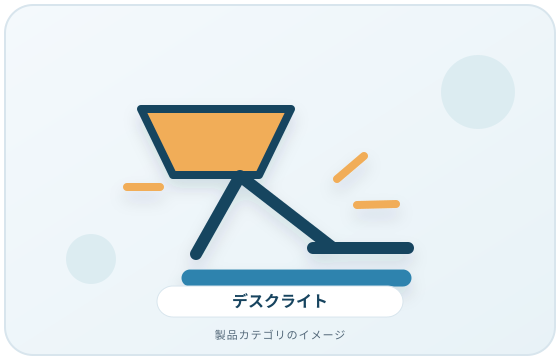
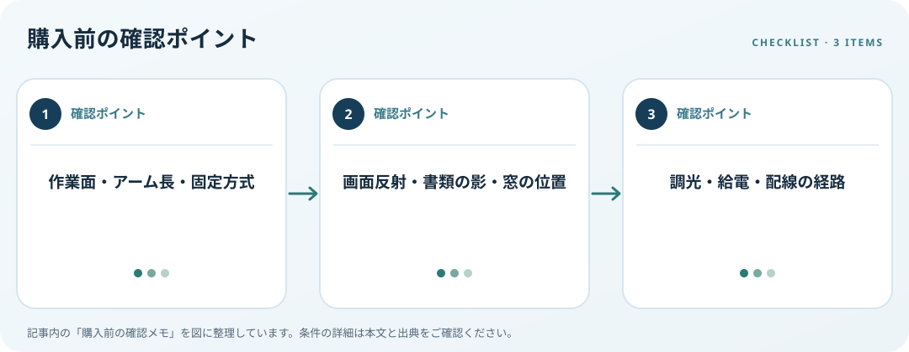

照らす作業面、画面への反射、設置方式、給電条件を確認します。この記事では仕様の確認順を整理します。
画像・ボタンはAmazonアソシエイトリンクです。適格購入により紹介料を得る場合があります。

Amazon.co.jpで「デスクライト モニター 反射」を探す ↗

照らす範囲と取付を決める
書類、キーボード、手元の作業など追加照明が必要な場所を決めます。アーム長やベース寸法、クランプ式なら天板厚、壁との距離、モニターアームとの干渉を測ります。クリップ式はメーカーの取付条件を読み、机面に固定できるか確認します。
反射と影を確認する
OSHAは画面に光が反射しにくい作業環境を整える考え方を案内しています。ライトを点けた時に画面や眼鏡へ光源が映らない位置を想定し、書類に影ができないかも確認します。色温度や照度の数値だけで全ての机での見やすさを決めないでください。
調光と電源を照合
明るさや色の調整段階、操作部の位置、USB給電条件、ACアダプターの有無を仕様表で確認します。USB端子がある場合は給電用かデータ用か、必要な電力も見ます。ケーブルが通路に垂れたり、手が操作部に届かなかったりしない配置を考えましょう。
購入前の確認メモ
- 作業面・アーム長・固定方式
- 画面反射・書類の影・窓の位置
- 調光・給電・配線の経路
この記事は出典の公開情報を購入前の確認項目に整理したもので、特定商品の使用・実測・レビュー・ランキング・価格・在庫の調査は行っていません。購入時には利用機器メーカーの最新仕様をご確認ください。
出典
- Workstation Environment — OSHA（確認日: 2026-10-10）
- Document Holders — OSHA（確認日: 2026-10-10）
- Monitors — OSHA（確認日: 2026-10-10）